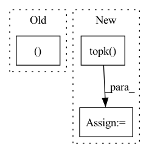

Pattern ID :27435

Before Change
self.initialize()
def forward(self, inputs, targets):
enc_output, i_mask = None, None
if self.has_inputs:
i_mask = utils.create_pad_mask(inputs, self.src_pad_idx)
enc_output = self.encode(inputs, i_mask)
After Change
encoder_padded_outputs, _ = self.encoder(padded_input, input_lengths)
pred, gold, *_ = self.decoder(padded_target, encoder_padded_outputs, input_lengths)
hyp_best_scores, hyp_best_ids = torch.topk(pred, 1, dim=2)
hyp_seq = hyp_best_ids.squeeze(2)
gold_seq = gold
In pattern: SUPERPATTERN
Frequency: 5
Non-data size: 3
Instances
Fragment ID: 81568543
Project Name: qute012/kosr
Commit Name: b7d24b0d835254fd425224eba3421a3b7224e55f
Time: 2021-01-12
Author: ejrwls012@gmail.com
File Name: model/transformer/transformer.py
M Class Name: Transformer
N Class Name: Transformer
M Method Name: forward(4)
N Method Name: forward(3)
M Parent Class: nn.Module
N Parent Class: nn.Module
M File Name: model/transformer/transformer.py
N File Name: model/transformer/transformer.py
M Start Line: 19
M End Line: 28
N Start Line: 18
N End Line: 34
'>
Before Change
self.cfg = cfg
def forward(self, points, features):
proposals = Boxes3D(20 * torch.rand((25, 7)).cuda())
return proposals
After Change
def forward(self, points, features):
features = features.permute(0, 2, 1)
proposals = Boxes3D(self.mlp(features))
_, indices = torch.topk(proposals.score, k=self.cfg.PROPOSAL.TOPK, dim=1)
indices = indices.squeeze(0).squeeze(-1)
proposals = Boxes3D(proposals.tensor[:, indices])
return proposals
'>
Fragment ID: 81568548
Project Name: jhultman/vision3d
Commit Name: 8439cb424b206f497ff582b81f58bd2cdd45dd0d
Time: 2020-02-10
Author: 27909223+jhultman@users.noreply.github.com
File Name: pvrcnn/proposal.py
M Class Name: ProposalLayer
N Class Name: ProposalLayer
M Method Name: forward(3)
N Method Name: forward(3)
M Parent Class: nn.Module
N Parent Class: nn.Module
M File Name: pvrcnn/proposal.py
N File Name: pvrcnn/proposal.py
M Start Line: 17
M End Line: 17
N Start Line: 28
N End Line: 32
'>
Before Change
:return:
batch_size, N, _ = tar_candidate.size()
tar_pred_prob, dx, dy, top_m_indices = self.forward(feat_in, tar_candidate)
// select the M output and gt
index_offset = torch.arange(0, batch_size, device=self.device).view(batch_size, -1).repeat(1, self.M).view(-1)
After Change
// pred prob and compute cls loss
feat_in_prob = torch.cat([feat_in.unsqueeze(1).repeat(1, N, 1), tar_candidate], dim=2)
tar_candit_prob = self.prob_mlp(feat_in_prob).squeeze(-1) // [batch_size, self.N_tar]
_, indices = tar_candit_prob.topk(self.M, dim=1)
// select the M output and gt
index_offset = torch.arange(0, batch_size, device=self.device).view(batch_size, -1).repeat(1, self.M).view(-1)
top_m_indices = indices.view(-1) + index_offset * N
'>
Fragment ID: 81568551
Project Name: henry1iu/tnt-trajectory-prediction
Commit Name: f39d0655e9e763f4dd61411259fdd4d214f6f34d
Time: 2021-04-09
Author: liu.jb.henry@gmail.com
File Name: core/model/layers/target_prediction.py
M Class Name: TargetPred
N Class Name: TargetPred
M Method Name: loss(6)
N Method Name: loss(6)
M Parent Class: nn.Module
N Parent Class: nn.Module
M File Name: core/model/layers/target_prediction.py
N File Name: core/model/layers/target_prediction.py
M Start Line: 92
M End Line: 107
N Start Line: 93
N End Line: 112
'>
Before Change
return (calculated_metrics, y_true, y_pred, total_loss)
def get_predicted(self, outputs):
_, predicted = torch.max(outputs.data, 1)
return predicted
def load_optimizer(self):
After Change
def get_predicted(self, outputs):
probs = nnf.softmax(outputs.data, dim=1)
predicted_probs, predicted = probs.topk(1, dim=1)
//_, predicted = torch.max(outputs.data, 1)
return predicted_probs, predicted.cpu().numpy()
def load_optimizer(self):
'>
Fragment ID: 81568547
Project Name: biasvariancelabs/aitlas
Commit Name: d4fd003817b3dc2fa73dbcc31b713b0328281175
Time: 2020-10-16
Author: ivica.dimitrovski@gmail.com
File Name: aitlas/base/classifiers.py
M Class Name: BaseMulticlassClassifier
N Class Name: BaseMulticlassClassifier
M Method Name: get_predicted(2)
N Method Name: get_predicted(2)
M Parent Class: BaseModel
N Parent Class: BaseModel
M File Name: aitlas/base/classifiers.py
N File Name: aitlas/base/classifiers.py
M Start Line: 199
M End Line: 200
N Start Line: 201
N End Line: 204